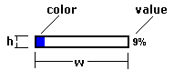
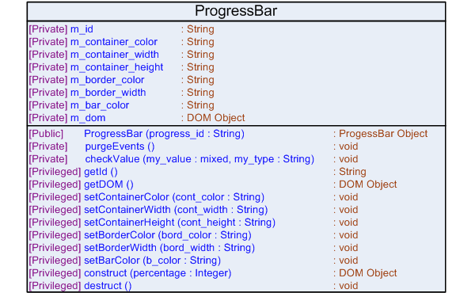

|

|
ProgressBar Widget Documentation
|
The ProgressBar widget was designed in JavaScript and attempts to provide a
simple, reusable mechanism for adding any number of horizontal progress bars to
an HTML Web-page.
Internally, the JavaScript class stores the structure of the progress bar as an HTML DOM object. After this is appended to a Web-page, you can see that this is a set of HTML tags combined in a special way to look like a colored progress bar with a percentage value listed beside it. Although JavaScript must be written to build the widget, it will ultimately be reduced to a set of HTML tags when you view the source code of the Web-page. |
Look and Feel

Logical Diagram
Not Applicable - This widget has no dependencies on other widgets or code modules.
Include Mechanism
To use this JavaScript class in a Web-page, please add the HTML script tag with the appropriate attributes to the HEAD section of the HTML document. The path listed assumes that the file is located in the same directory as the HTML Web-page on which this widget will be used (although the include can be made in the BODY of the HTML document it is recommended to place it in the HEAD section to reduce load times).
<html>
<head>
<script type=“text/javascript” src=“./class.progressbar.js”></script>
</head>
<html>
Browser Compatibility
This widget has been tested, and is supported on the following browsers:
- Firefox 1.5.x
- Firefox 2.0.x
- Internet Explorer 6
- Internet Explorer 7
HTML Structure
<div> <!-- Outer Container Node -->
<table>
<thead></thead>
<tbody>
<tr>
<td>
<div> <!-- Inner Container Node -->
<span></span> <!-- Color Bar Node -->
</div>
</td>
<td></td> <!-- Percentage Node -->
</tr>
</tbody>
</table>
</div>
Class Diagram
Class Documentation
- Attributes:
- Methods:
Attributes
m_id
The "id" given to the ProgressBar when rendered as HTML [Outer Container Node]
m_container_color
Controls the background-color of the ProgressBar [Inner Container Node]
m_container_width
Controls the width of the ProgressBar [Inner Container Node]
m_container_height
Controls the height of the ProgressBar [Inner Container and Color Bar Nodes]
m_border_color
Controls the border color of the ProgressBar [Inner Container Node]
m_border_width
Controls the border width of the ProgressBar [Inner Container Node]
m_bar_color
Controls the color of the ProgressBar [Color Bar Node]
m_dom
Stores the ProgressBar as an HTML DOM structure
Methods
ProgressBar (progress_id)
Construct an HTML ProgressBar widget (internally stored as DOM)
Parameters:
progress_id - the "id" appended to the HTML component
[Outer Container Node]
Notes:
Progress Bar Constructor
purgeEvents ()
Frees all memory associated with embedded ProgressBar events
Returns:
void
checkValue (my_value, my_type)
Checks specific types and format of values to ensure they valid.
Used to ensure that valid color,
percentage, and size values are used
Parameters:
my_value - any type of value to be checked
my_type - "size", "color", or "percentage"
Returns:
true if the value is valid when checked against the
desired type; false otherwise
Notes:
Use with the "color" type only allows RGB or (3 or 6 Digit)
Hex formats
Use with the "size" type only allows numerical values,
followed by "px" or "%"
Use with the "percentage" type only allows numerical
values
getId ()
Returns the "id" of the ProgressBar (m_id)
Returns:
m_id
getDOM ()
Returns the DOM representation of the ProgressBar
Returns:
m_dom
setContainerColor (cont_color)
Set the background color for the ProgressBar
Parameters:
cont_color - an RGB or HEX string to be used as the
background color
Returns:
void
setContainerWidth (cont_width)
Set the width of the ProgressBar
Parameters:
cont_width - a numerical value for the width followed
by "px" or "%"
Returns:
void
setContainerHeight (cont_height)
Set the height of the ProgressBar
Parameters:
cont_height - a numerical value for the height followed
by "px" or "%"
Returns:
void
setBorderColor (bord_color)
Set the color of the border for the ProgressBar
Parameters:
bord_color - an RGB or HEX string to be used as the
border color
Returns:
void
setBorderWidth (bord_width)
Set the width of the border for the ProgressBar
Parameters:
bord_width - a numerical value for the thickness of the
border followed by "px" or "%"
Returns:
void
setBarColor (b_color)
Set the color of the ProgressBar
Parameters:
b_color - an RGB or HEX string used as the progress
color
Returns:
void
construct (percentage)
Construct the ProgressBar as DOM (according to HTML structure)
Parameters:
percentage - a numerical value used for the level of
progress
Returns:
a DOM Object representing the widget on success
Notes:
This must be called each time a change is made to the
widget in order to reflect the
corresponding change in HTML
destruct ()
Free all memory associated with the ProgressBar object
Returns:
void
Notes:
This must be manually called before unloading the
Web-page to prevent memory leaks
Example Usage
The examples to follow are designed to serve as a simple walkthrough on how you would add the ProgressBar widget to a Web-page. Each example is designed to build on those before it, and therefore, the final example will show the overall picture regarding instantiating, customizing, building, displaying, and destroying the ProgressBar widget correctly. While it is not necessary to follow each step exactly, this will provide a general idea on how it works.
Example 1 - Hooking it up
First create an HTML hook or placeholder in which the widget will be placed on the Web-page. While each widget is self-contained, this is an easy way to map out the structure of the page without embedding lots of JavaScript within the HTML. "div" tags serve as great hooks, since they can be placed within almost any type of tag, and similarly, can contain almost any tag.
<html>
<head>
<script type=“text/javascript” src=“./class.progressbar.js”></script>
</head>
<body>
<div id=“progress_bar_hook”></div>
</body>
<html>
Example 2 - Creating the ProgressBar
To create the ProgressBar, as in other object-oriented programming languages, the constructor must be called along with the use of the keyword new.
<html>
<head>
<script type=“text/javascript” src=“./class.progressbar.js”></script>
<script type=“text/javascript”>
var widget = null;
function init()
{
widget = new ProgressBar('my_progress');
}
</script>
</head>
<body onload=“init()”>
<div id=“progress_bar_hook”></div>
</body>
<html>
Example 3 - Controlling Look and Feel
Some JavaScript must be used in order to customize the colors, borders, and size of the ProgressBar. See the class diagram and documentation in order to see which methods are available for use. The example below creates a ProgressBar that is 300 pixels long, 100 pixels high, has a green color, and a default background and border.
<html>
<head>
<script type=“text/javascript” src=“./class.progressbar.js”></script>
<script type=“text/javascript”>
var widget = null;
function init()
{
widget = new ProgressBar('my_progress');
widget.setContainerWidth(300 + 'px');
widget.setContainerHeight(100 + 'px');
widget.setBarColor('RGB(0,255,0)');
}
</script>
</head>
<body onload=“init()”>
<div id=“progress_bar_hook”></div>
</body>
<html>
Example 4 - Displaying the ProgressBar
To use the widget in a Web-page the construct() method must be called in order to create the HTML DOM representation of the widget. This DOM object must then be appended to the hook that was previously created. This will allow the ProgressBar to become visible on the page. If the widget is going to be updated regularly, whether via AJAX or by having the user perform an action such as clicking a button, the construct() method must be called each time and the widget must be appended to the hook each time. Clear the hook of any previously appended ProgressBar widgets if you only want one to appear on the Web-page (that is, set the innerHTML property of the hook to an empty string).
<html>
<head>
<script type=“text/javascript” src=“./class.progressbar.js”></script>
<script type=“text/javascript”>
var widget = null;
function init()
{
widget = new ProgressBar('my_progress');
widget.setContainerWidth(300 + 'px');
widget.setContainerHeight(100 + 'px');
widget.setBarColor('RGB(0,255,0)');
var hook = document.getElementById('progress_bar_hook');
hook.innerHTML = '';
hook.appendChild(widget.construct(25));
}
</script>
</head>
<body onload=“init()”>
<div id=“progress_bar_hook”></div>
</body>
<html>
Example 5 - Cleaning up Memory
To ensure that all memory associated with the widget is freed upon closing the Web-page or browser it is necessary to call the destruct() method. While most programming languages have a destructor that is implicitly called, here, a explicit function call must be made. The hook to which the widget was appended should also be cleared.
<html>
<head>
<script type=“text/javascript” src=“./class.progressbar.js”></script>
<script type=“text/javascript”>
var widget = null;
function init()
{
widget = new ProgressBar('my_progress');
widget.setContainerWidth(300 + 'px');
widget.setContainerHeight(100 + 'px');
widget.setBarColor('RGB(0,255,0)');
var hook = document.getElementById('progress_bar_hook');
hook.innerHTML = '';
hook.appendChild(widget.construct(25));
}
function destroy()
{
widget.destruct();
document.getElementById('progress_bar_hook').innerHTML = '';
}
</script>
</head>
<body onload=“init()” unload=“destroy()”>
<div id=“progress_bar_hook”></div>
</body>
<html>
Special Notes
- This particular widget uses default colors and sizes if none are specified prior to the construct() method call.
- Always call the destruct() method when unloading the page to prevent memory leaks.
Lessons Learned
There were no difficulties encountered during the creation of the ProgressBar widget and no cross-browser hacks were required.
© Copyright IBM Corp. 2007. All rights reserved.
IBM®, the IBM logo, DB2®, AIX®, and pureXML™ are
registered trademarks of International Business Machines Corporation in the
United States, other countries, or both.
Zend and Zend Core are registered trademarks of Zend Technologies Limited,
in the United States, other countries, or both.
Mozilla® and Firefox® are registered trademarks of the Mozilla Foundation in the
United States and other countries.
Microsoft, Windows, Windows NT, Internet Explorer®, and the Windows logo are
trademarks of Microsoft Corporation in the United States, other countries, or
both.
Linux is a registered trademark of Linus Torvalds in the United
States, other countries, or both.
Other company, product, or service names
may be trademarks or service marks of others.